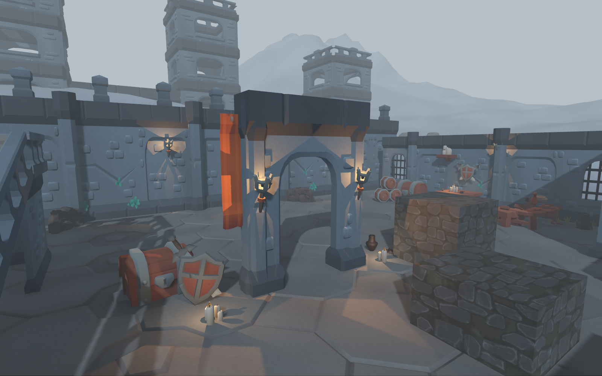

GODOT ENVART / AGENT WORKFLOW
以画面为核心的素材装配流程
本次流程提炼以用户指定的 7119a84（真实素材导入）与 b81f512（灰烬、设施方向及同机位对比）为基线。后续写实素材实验已停止，不作为新的目标。
要复现的是完整地面、统一建筑、具有用途的道具组、远近层次与可近看的细节。控制器、轨迹相机和测试框架不属于必须复制的产出。


整套流程，六步即可
1 · 看参考，定局部
Agent 阅读白盒约束、实际看参考图，用几句话确定空间用途、主形体、色调和焦点。先选一个能完整审阅的局部，不默认扩建全场或开发玩法。
2 · 找一套合适素材
以建筑套件为主，再补相容的道具和植物。核实实际免费内容和商用许可，记录来源。适配性比贴图分辨率、模型数量更重要。
3 · 先看少量样品
在 Godot 检查代表模型的比例、轴心、材质、透明遮罩和法线。只导入成功不算完成；模型必须能在预期距离下成立。
4 · 装配成有人使用的地方
先地面、入口、边界与高差，再布置维修、补给或交接等道具组，最后补接地细节、远景和光照。程序化只补缺口，不代替主要素材。
5 · 出实机图，修最差处
固定总览、入口和近景机位。Agent 必须实际看图，先修最影响画面的比例、悬空、重复或风格冲突，再拍相同视角比较。
6 · 交付并接受判断
交付可编辑工程、素材许可与清单、少量实机图和打开方式。用户判断美术效果，Agent 记录不足，不以技术 PASS 宣称美术验收通过。
Skill
godot-envart / SKILL.md 是通用入口；Godot 实施笔记 只在需要时读取。技能不绑定当前工程、某个下载网站或特定美术风格，不要求固定数量的模型。
调用示例：使用 $godot-envart，按这些参考图把白盒入口与墙边工作区做成统一的环境美术，先给总览和近景实机图。
保留什么，舍弃什么
保留素材优先、成套选择、局部样板、真实看图迭代、来源追踪和小阶段提交。只保留必要的启动、导入、出图检查；若已有玩法确实可能受影响，再检查对应部分。空工程试跑不开发玩家控制器，不复制三视角/轨迹系统，不写全面碰撞回归，不把测试数量当成果。
独立试跑
将 skill 与指定提交的六张原始参考图交给独立 subagent，在空项目中选择一种方向复刻。允许使用经核实的原始素材缓存或另找素材；不提供旧场景、装配脚本和控制器。试跑完成后，将以实际工程和截图记录结果及不足。